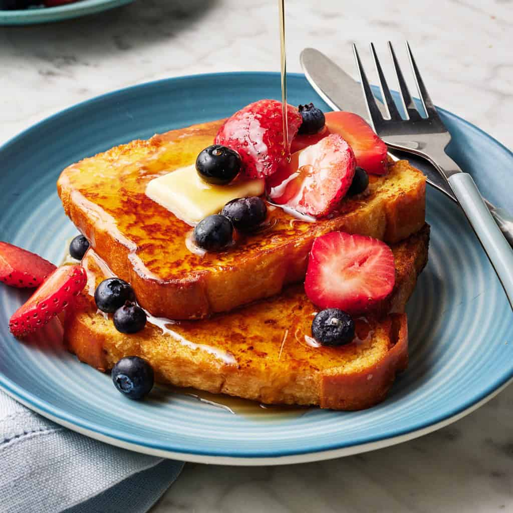

Ingredients
- Eggs & Milk
- Ground cinnamon and Vanilla extract
- Sea Salt
- Good Bread
- Maple syrup
- Butter (OR) Coconut Oil
How to Make French Toast
-
First, make the custard. In a large bowl or shallow dish,
whisk together the eggs, milk, vanilla, and cinnamon with a pinch of
salt.
-
Next, dip the bread. Dip each slice of bread into the egg
mixture, making sure both sides are fully coated.
-
Then, cook. Heat a nonstick skillet or griddle over medium
heat, and brush it with butter. Add as many slices as will fit in a
single layer and cook for 1 to 3 minutes per side. They’re ready
when they’re nicely golden brown on both sides. Cook additional
batches as needed.
-
Top with fresh fruit and a drizzle of maple syrup, and enjoy! Yep,
it’s that easy.

Fresh out the oven. This french toast will have you saying bonjour!